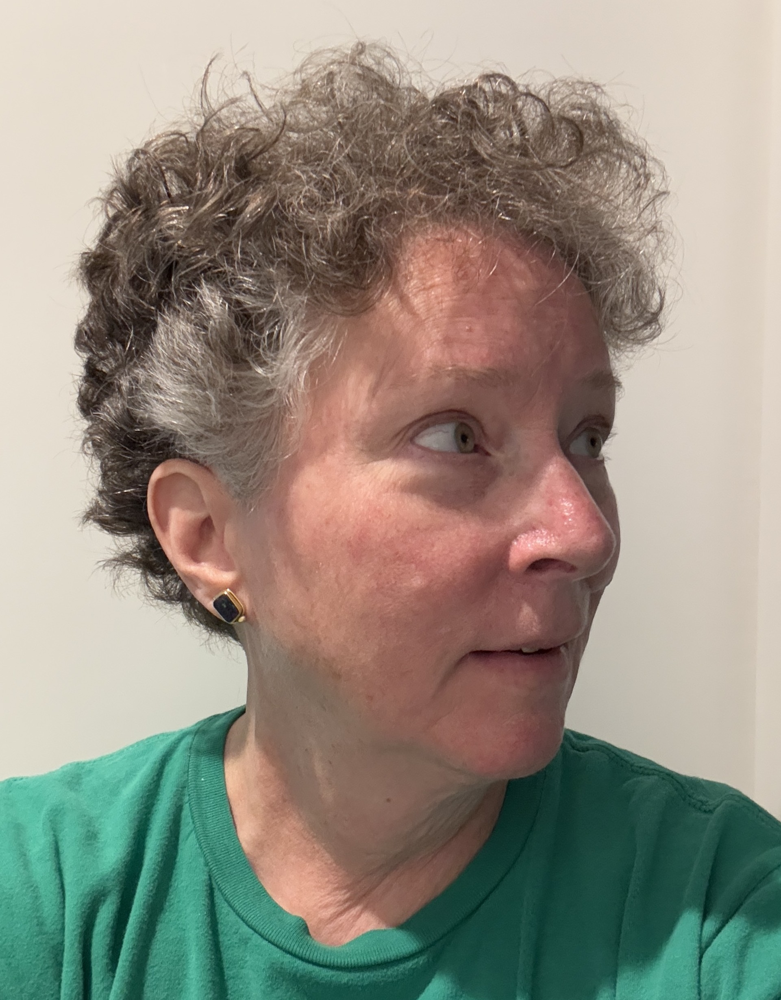

Writing and Numbers: A View from Cognitive Archaeology

This talk examines literacy and numeracy through Material Engagement Theory, a theoretical framework for cognitive archaeology that draws upon 4E concepts from the philosophy of mind. Using original systems of writing such as Mesopotamian cuneiform, literacy is shown as emerging through sustained, collaborative interaction with early writing as a material form. The interaction between behaviors, brains, and the material form that is writing causes the components to undergo mutual, co-adaptive transformations, changing in ways that maximize their interactive efficiency. Numeracy, in comparison, is traced through the typical chronology of material forms that occasion and structure concepts cross-culturally: exemplars, fingers, tallies, tokens, and written notations. Symbolic forms develop as the material representations and associated concepts become elaborated, suggesting that symbolic thinking is a cognitive ability that emerges in conjunction with and through the use of material forms.
Karenleigh A. Overmann is a cognitive archaeologist who investigates numeracy and literacy as complex cultural systems that emerge through sustained interactions between behaviors, brains, and material forms. She earned a doctorate in archaeology from the University of Oxford as a Clarendon Scholar. She completed two years of postdoctoral research at the University of Bergen, Norway as a Marie Curie research fellow. She currently directs the Center for Cognitive Archaeology at the University of Colorado, Colorado Springs.